직원과 가족들이 믿고 선택한 곳, 서울새론안과의원
서울새론안과의원은 대학병원급 장비로 환자의 정확한 상태를 파악합니다.
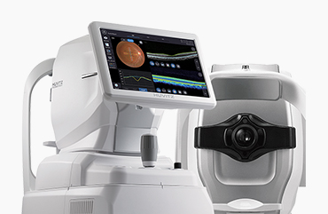
3D OCT와 Fundus Camera, PC가
결합된 단일 통합 시스템으로 5가지
장비를 하나로 모은 망막단층 진단기
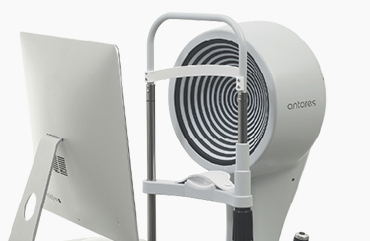
각막 지형도 및 자동 맞춤 기능이 있는
콘택트 렌즈 피팅 시스템, 각막 상태를
진단하는 필수적인 장비
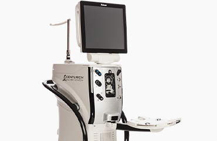
백내장 수술 장비 중 고성능과
안정성을 자랑하는 장비,
세계 최초 안압 유지 기능을 내장
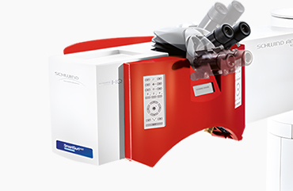
시력을 교정하는 원스텝 방식의
올레이저 장비로 레이저 중 가장
빠른 속도로 수술시간을 단축하고
정확한 수술을 하게 하는 엑시머 레이저
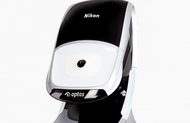
산동 없이 약 0.4초 만에
망막의 80% 이상을 넓게 촬영하여,
망막 및 맥락막 질환의 조기 발견을
돕는 정밀 광각 검사 장비
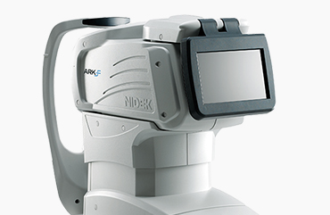
망막에서의 빛 반사를 측정함으로써
눈의 굴절력을 검사하는 장비
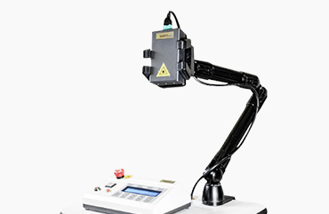
콜라겐 교차결합술로 안정성을 높인
라식, 라섹 시력교정 수술, 원추각막,
근시퇴행 예방
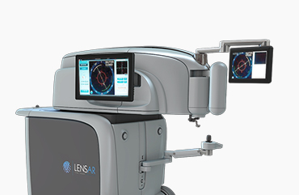
3D OCT 시각화 기술로
수술 과정을 실시간 모니터링하여,
안구 구조에 맞춘 정교한 절삭이
가능한 백내장 수술 레이저
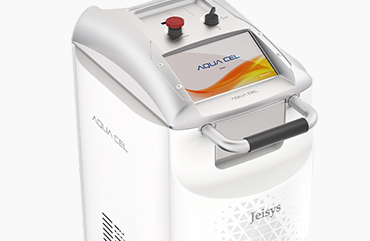
피부 심부열로 막힌 기름샘 배출을
돕고 눈물막을 안정시켜 안구건조증의
근본 원인을 개선하는 IPL 레이저
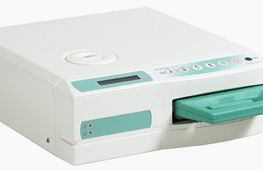
고성능 고압증기 시스템으로
수술 기구를 신속하고 철저하게
멸균하여 환자 간 교차 감염을
방지하는 첨단 멸균 시스템
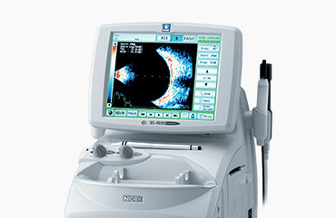
초음파를 통해 안구의 길이(A-scan)와
내부 구조(B-scan)를 정밀 측정하여,
백내장 수술을 위한 도수 계산 및
망막·유리체 질환을 진단하는 장비
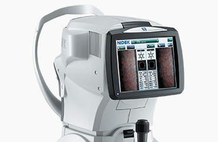
고배율 카메라로 각막 내피세포의
밀도와 모양을 정밀 분석하여,
수술 전 안전성을 확인하고
각막부종이나 이양증 등
주요 질환을 진단하는 장비
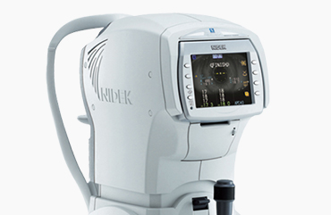
공기압을 이용한 비접촉 방식으로
통증과 감염 우려 없이 안압을 측정하며,
녹내장 등 주요 안질환의 조기 발견을
돕는 기초 검사 장비
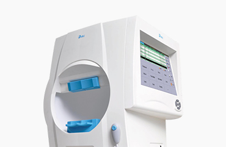
조기 녹내장 및 안질환 검사를 위한
자동 시야 결손 진단 검사기
실명을 초래하는 녹내장 질환의 진단
및 지속적인 검사를 위한 필수 장비
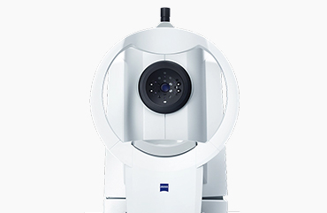
백내장 수술 시 환자에게 삽입되는
인공수정체를 정확하게 계산할 수 있는
세계 최초의 비접촉식 초정밀 장비
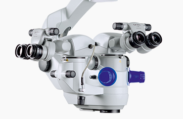
탁월한 시야 확보 기능으로
고난도의 안과 수술에 사용되는 장비
특히, 각막이식이나 백내장,
난시교정술, 망막 수술 등 안과 수술에
탁월한 시야 확보 기능 보유
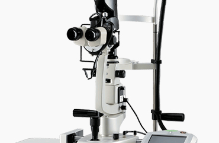
당뇨망막병증, 녹내장 등
질환 치료에 사용
미세혈관의 이상 부위를 레이저로
응고시켜 황반부종과 시력 저하가
더 이상 진행되지 않도록 치료
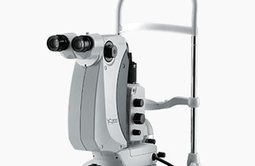
레이저에서 발생하는 충격파를
안내 병변 부위를 전달할 수 있어
후발성 백내장, 녹내장, 홍채 절제술
가능
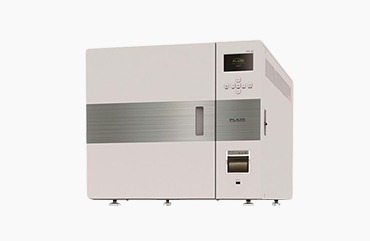
고압, 고온의 증기를 가해 각종
기구에 묻은 병원균 및 미생물을
제거하는데 사용되는 의료장비

월 화 목 금
am 09:00 ~ pm 06:00토 요 일
am 09:00 ~ pm 04:00점 심 시 간
pm 01:00 ~ pm 02:00수요일, 일요일, 공휴일 휴무입니다.
공휴일 있는 주는 수요일 대체진료입니다.